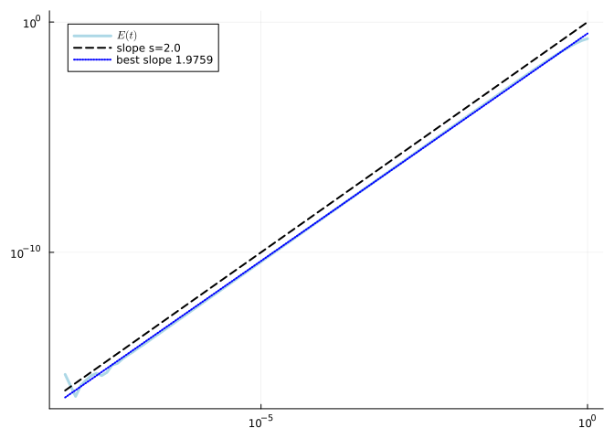
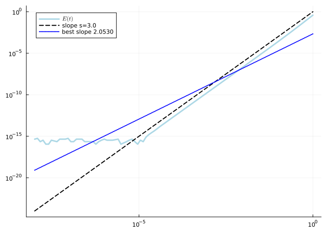
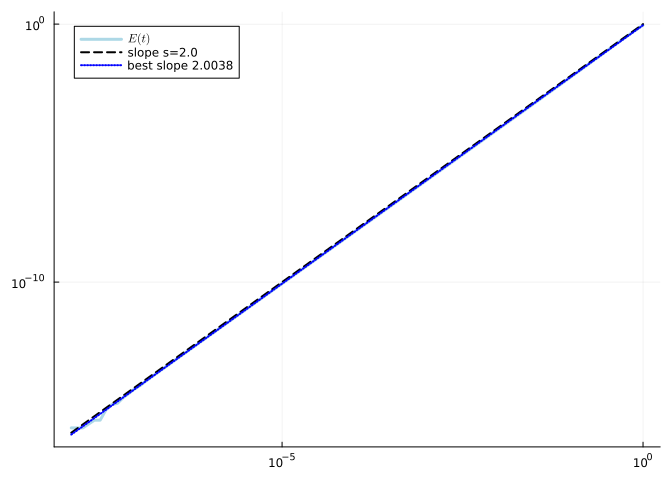
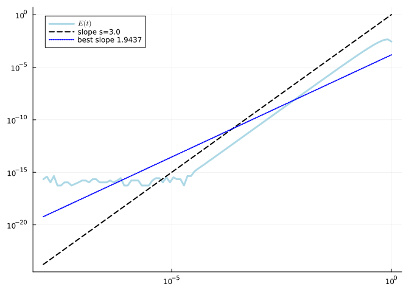

Obtain the Riemannian gradient and Hessian from their Euclidean analogues in the embedding
Ronny Bergmann
Specifying a cost function $f: \mathcal M → ℝ$ on a manifold is usually the model one starts with. Specifying its gradient $\operatorname{grad} f: \mathcal M → T\mathcal M$, or more precisely $\operatorname{grad}f(p) ∈ T_p\mathcal M$, and eventually a Hessian $\operatorname{Hess} f: T_p\mathcal M → T_p\mathcal M$ are then necessary to perform optimization. Since these might be challenging to compute, especially when manifolds and differential geometry are not the main area of a user, easier to use methods might be welcome.
This tutorial discusses how to specify $f$ in the embedding as $\tilde f$, maybe only locally around the manifold, and use the Euclidean gradient $∇ \tilde f$ and Hessian $∇^2 \tilde f$ within Manopt.jl.
For the theoretical background see convert an Euclidean to an Riemannian Gradient, or Section 4.7 of [Bou23] for the gradient part or Section 5.11 as well as [Ngu23] for the background on converting Hessians.
Here we use the Examples 9.40 and 9.49 of [Bou23] and compare the different methods, one can call the solver, depending on which gradient and/or Hessian one provides.
using Manifolds, Manopt, ManifoldDiffusing LinearAlgebra, Random, Colors, PlotsRandom.seed!(123)We consider the cost function on the Grassmann manifold given by
n = 5k = 2M = Grassmann(5,2)A = Symmetric(rand(n,n));f(M, p) = 1 / 2 * tr(p' * A * p)Note that this implementation is already also a valid implementation / continuation of $f$ into the (lifted) embedding of the Grassmann manifold. In the implementation we can use f for both the Euclidean $\tilde f$ and the Grassmann case $f$.
Its Euclidean gradient $\nabla f$ and Hessian $\nabla^2f$ are easy to compute as
∇f(M, p) = A * p∇²f(M,p,X) = A*XOn the other hand, from the aforementioned Example 9.49 we can also state the Riemannian gradient and Hessian for comparison as
grad_f(M, p) = A * p - p * (p' * A * p)Hess_f(M, p, X) = A * X - p * p' * A * X - X * p' * A * pWe can verify that these are the correct at least numerically by calling the check_gradient
check_gradient(M, f, grad_f; plot=true)
and the check_Hessian, which requires a bit more tolerance in its linearity verification
check_Hessian(M, f, grad_f, Hess_f; plot=true, error=:error, atol=1e-15)
While they look reasonable here and were already derived, for the general case this derivation might be more complicated.
Luckily there exist two functions in ManifoldDiff.jl that are implemented for several manifolds from Manifolds.jl, namely riemannian_gradient(M, p, eG) that converts a Riemannian gradient eG=$\nabla \tilde f(p)$ into a the Riemannian one $\operatorname{grad} f(p)$ and riemannian_Hessian(M, p, eG, eH, X) which converts the Euclidean Hessian eH=$\nabla^2 \tilde f(p)[X]$ into $\operatorname{Hess} f(p)[X]$, where we also require the Euclidean gradient eG=$\nabla \tilde f(p)$.
So we can define
grad2_f(M, p) = riemannian_gradient(M, p, ∇f(get_embedding(M), embed(M, p)))where only formally we here call embed(M,p) before passing p to the Euclidean gradient, though here (for the Grassmann manifold with Stiefel representation) the embedding function is the identity.
Similarly for the Hessian, where in our example the embeddings of both the points and tangent vectors are the identity.
function Hess2_f(M, p, X) return riemannian_Hessian( M, p, ∇f(get_embedding(M), embed(M, p)), ∇²f(get_embedding(M), embed(M, p), embed(M, p, X)), X )endAnd we can again verify these numerically,
check_gradient(M, f, grad2_f; plot=true)
and
check_Hessian(M, f, grad2_f, Hess2_f; plot=true, error=:error, atol=1e-14)
which yields the same result, but we see that the Euclidean conversion might be a bit less stable.
Now if we want to use these in optimization we would require these two functions to call e.g.
p0 = [1.0 0.0; 0.0 1.0; 0.0 0.0; 0.0 0.0; 0.0 0.0]r1 = adaptive_regularization_with_cubics( M, f, grad_f, Hess_f, p0; debug=[:Iteration, :Cost, "\n"], return_objective=true, return_state=true,)q1 = get_solver_result(r1)r1Initial f(x): 0.666814
# 1 f(x): 0.329582
# 2 f(x): -0.251913
# 3 f(x): -0.451908
# 4 f(x): -0.604753
# 5 f(x): -0.608791
# 6 f(x): -0.608797
# 7 f(x): -0.608797
# Solver state for `Manopt.jl`s Adaptive Regularization with Cubics (ARC)
After 7 iterations
## Parameters
* η1 | η2 : 0.1 | 0.9
* γ1 | γ2 : 0.1 | 2.0
* σ (σmin) : 0.0004082482904638632 (1.0e-10)
* ρ (ρ_regularization) : 1.0002163851951777 (1000.0)
* retraction method : ManifoldsBase.ExponentialRetraction()
* sub solver state :
| # Solver state for `Manopt.jl`s Lanczos Iteration
| After 6 iterations
|
| ## Parameters
| * σ : 0.0040824829046386315
| * # of Lanczos vectors used : 6
|
| ## Stopping criteria
| (a) For the Lanczos Iteration
| Stop when _one_ of the following is fulfilled:
| * stopped after 6 iterations: reached
| * First order progress with θ=0.5: not reached
| Overall: reached
| (b) For the Newton sub solver
| A stopping criterion to stop after 200 iterations
| not reached
| This indicates convergence: No
## Stopping criterion
Stop when _one_ of the following is fulfilled:
* stopped after 40 iterations: not reached
* |grad f| < 1.0e-9: reached
* All 5 Lanczos vectors used: not reached
Overall: reached
This indicates convergence: No
## Debug
:Iteration = A DebugAction consisting of a group with the following elements
* A DebugAction that prints the current iteration number in format “# %-6d”
* A DebugAction printing the current cost value
* A DebugAction printing the String “\n” as a dividerbut if you choose to go for the conversions, then, thinking of the embedding and defining two new functions might be tedious. There is a shortcut for these, which performs the change internally, when necessary by specifying objective_type=:Euclidean.
r2 = adaptive_regularization_with_cubics( M, f, ∇f, ∇²f, p0; # The one line different to specify our grad/Hess are Eucldiean: objective_type=:Euclidean, debug=[:Iteration, :Cost, "\n"], return_objective=true, return_state=true,)q2 = get_solver_result(r2)r2Initial f(x): 0.666814
# 1 f(x): 0.329582
# 2 f(x): -0.251913
# 3 f(x): -0.451908
# 4 f(x): -0.604753
# 5 f(x): -0.608791
# 6 f(x): -0.608797
# 7 f(x): -0.608797
# Solver state for `Manopt.jl`s Adaptive Regularization with Cubics (ARC)
After 7 iterations
## Parameters
* η1 | η2 : 0.1 | 0.9
* γ1 | γ2 : 0.1 | 2.0
* σ (σmin) : 0.0004082482904638632 (1.0e-10)
* ρ (ρ_regularization) : 1.000409105075989 (1000.0)
* retraction method : ManifoldsBase.ExponentialRetraction()
* sub solver state :
| # Solver state for `Manopt.jl`s Lanczos Iteration
| After 6 iterations
|
| ## Parameters
| * σ : 0.0040824829046386315
| * # of Lanczos vectors used : 6
|
| ## Stopping criteria
| (a) For the Lanczos Iteration
| Stop when _one_ of the following is fulfilled:
| * stopped after 6 iterations: reached
| * First order progress with θ=0.5: not reached
| Overall: reached
| (b) For the Newton sub solver
| A stopping criterion to stop after 200 iterations
| not reached
| This indicates convergence: No
## Stopping criterion
Stop when _one_ of the following is fulfilled:
* stopped after 40 iterations: not reached
* |grad f| < 1.0e-9: reached
* All 5 Lanczos vectors used: not reached
Overall: reached
This indicates convergence: No
## Debug
:Iteration = A DebugAction consisting of a group with the following elements
* A DebugAction that prints the current iteration number in format “# %-6d”
* A DebugAction printing the current cost value
* A DebugAction printing the String “\n” as a dividerA second order objective providing a cost, a gradient, and a Hessian
## Functions
* cost: f
* gradient: InplaceManifoldFunction(∇f, :TangentVector)
* Hessian: InplaceManifoldFunction(∇²f, :TangentVector)which returns the same result, see
distance(M, q1, q2)5.599906634890012e-16This conversion also works for the gradients of constraints, and is passed down to sub solvers by default when these are created using the Euclidean objective $f$, $\nabla f$ and $\nabla^2 f$.
Summary
If you have the Euclidean gradient (or Hessian) available for a solver call, all you need to provide is objective_type=:Euclidean to convert the objective to a Riemannian one.
Literature
- [Bou23]
- N. Boumal. An Introduction to Optimization on Smooth Manifolds. First Edition (Cambridge University Press, 2023).
- [Ngu23]
- D. Nguyen. Operator-Valued Formulas for Riemannian Gradient and Hessian and Families of Tractable Metrics in Riemannian Optimization. Journal of Optimization Theory and Applications 198, 135–164 (2023), arXiv:2009.10159.
Technical Details
This tutorial is cached. It was last run on the following package versions.
Status `~/work/Manopt.jl/Manopt.jl/tutorials/Project.toml`
[47edcb42] ADTypes v1.23.0
[6e4b80f9] BenchmarkTools v1.8.0
[5ae59095] Colors v0.13.1
[a0c0ee7d] DifferentiationInterface v0.7.21
[31c24e10] Distributions v0.25.131
[26cc04aa] FiniteDifferences v0.12.34
[f6369f11] ForwardDiff v1.4.5
[8ac3fa9e] LRUCache v1.6.2
[af67fdf4] ManifoldDiff v0.4.5
[1cead3c2] Manifolds v0.11.29
[3362f125] ManifoldsBase v2.5.0
[0fc0a36d] Manopt v0.6.4 `.`
[91a5bcdd] Plots v1.41.7
[731186ca] RecursiveArrayTools v4.5.0
[37e2e46d] LinearAlgebra v1.12.0
[9a3f8284] Random v1.11.0This tutorial was last rendered August 21, 2026, 9:43:49.